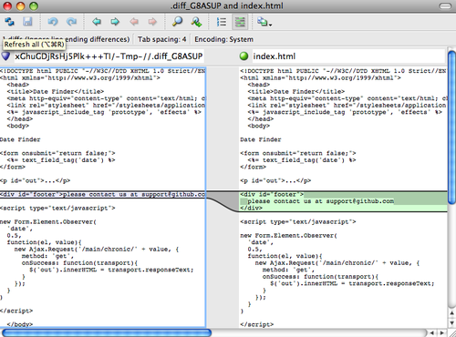

配置 Git¶
如第一章所言，用git config配置 Git，要做的第一件事就是设置名字和邮箱地址:
$ git config --global user.name "John Doe"
$ git config --global user.email johndoe@example.com
从现在开始，你会了解到一些类似以上但更为有趣的设置选项来自定义 Git。
先过一遍第一章中提到的 Git 配置细节。Git 使用一系列的配置文件来存储你定义的偏好，它首先会查找/etc/gitconfig文件，该文件含有 对系统上所有用户及他们所拥有的仓库都生效的配置值（译注::gitconfig是全局配置文件）， 如果传递–system选项给git config命令， Git 会读写这个文件。
接下来 Git 会查找每个用户的~/.gitconfig文件，你能传递–global选项让 Git读写该文件。
最后 Git 会查找由用户定义的各个库中 Git 目录下的配置文件（.git/config），该文件中的值只对属主库有效。 以上阐述的三层配置从一般到特殊层层推进，如果定义的值有冲突，以后面层中定义的为准，例如::在.git/config和/etc/gitconfig的较量中， .git/config取得了胜利。虽然你也可以直接手动编辑这些配置文件，但是运行git config命令将会来得简单些。
客户端基本配置¶
Git 能够识别的配置项被分为了两大类::客户端和服务器端，其中大部分基于你个人工作偏好，属于客户端配置。尽管有数不尽的选项，但我只阐述 其中经常使用或者会对你的工作流产生巨大影响的选项，如果你想观察你当前的 Git 能识别的选项列表，请运行:
$ git config --help
git config的手册页（译注::以man命令的显示方式）非常细致地罗列了所有可用的配置项。
core.editor
Git默认会调用你的环境变量editor定义的值作为文本编辑器，如果没有定义的话，会调用Vi来创建和编辑提交以及标签信息， 你可以使用core.editor改变默认编辑器:
$ git config --global core.editor emacs
现在无论你的环境变量editor被定义成什么，Git 都会调用Emacs编辑信息:
commit.template
如果把此项指定为你系统上的一个文件，当你提交的时候， Git 会默认使用该文件定义的内容。 例如::你创建了一个模板文件$HOME/.gitmessage.txt，它看起来像这样:
subject line
what happened
[ticket: X]
设置commit.template，当运行git commit时， Git 会在你的编辑器中显示以上的内容， 设置commit.template如下:
$ git config --global commit.template $HOME/.gitmessage.txt
$ git commit
然后当你提交时，在编辑器中显示的提交信息如下:
subject line
what happened
[ticket: X]
# Please enter the commit message for your changes. Lines starting
# with '#' will be ignored, and an empty message aborts the commit.
# On branch master
# Changes to be committed:
# (use "git reset HEAD <file>..." to unstage)
#
# modified: lib/test.rb
#
~
~
".git/COMMIT_EDITMSG" 14L, 297C
如果你有特定的策略要运用在提交信息上，在系统上创建一个模板文件，设置 Git 默认使用它，这样当提交时，你的策略每次都会被运用:
core.pager
core.pager指定 Git 运行诸如log、diff等所使用的分页器，你能设置成用more或者任何你喜欢的分页器（默认用的是less）， 当然你也可以什么都不用，设置空字符串:
$ git config --global core.pager ''
这样不管命令的输出量多少，都会在一页显示所有内容:
user.signingkey
如果你要创建经签署的含附注的标签（正如第二章所述），那么把你的GPG签署密钥设置为配置项会更好，设置密钥ID如下:
$ git config --global user.signingkey <gpg-key-id>
现在你能够签署标签，从而不必每次运行git tag命令时定义密钥:
$ git tag -s <tag-name>
core.excludesfile
正如第二章所述，你能在项目库的.gitignore文件里头用模式来定义那些无需纳入 Git 管理的文件，这样它们不会出现在未跟踪列表， 也不会在你运行git add后被暂存。然而，如果你想用项目库之外的文件来定义那些需被忽略的文件的话，用core.excludesfile 通知 Git 该文件所处的位置，文件内容和.gitignore类似:
help.autocorrect
该配置项只在 Git 1.6.1及以上版本有效，假如你在Git 1.6中错打了一条命令，会显示:
$ git com
git: 'com' is not a git-command. See 'git --help'.
Did you mean this?
commit
如果你把help.autocorrect设置成1（译注::启动自动修正），那么在只有一个命令被模糊匹配到的情况下，Git 会自动运行该命令。
Git中的着色¶
Git能够为输出到你终端的内容着色，以便你可以凭直观进行快速、简单地分析，有许多选项能供你使用以符合你的偏好:
color.ui
Git会按照你需要自动为大部分的输出加上颜色，你能明确地规定哪些需要着色以及怎样着色，设置color.ui为true来打开所有的默认终端着色。
$ git config –global color.ui true
设置好以后，当输出到终端时，Git 会为之加上颜色。其他的参数还有false和always，false意味着不为输出着色，而always则表明在任何情况下都要着色，即使 Git 命令被重定向到文件或管道。Git 1.5.5版本引进了此项配置，如果你拥有的版本更老，你必须对颜色有关选项各自进行详细地设置。
你会很少用到color.ui = always，在大多数情况下，如果你想在被重定向的输出中插入颜色码，你能传递–color标志给 Git 命令来迫使它这么做，color.ui = true应该是你的首选:
color.*
想要具体到哪些命令输出需要被着色以及怎样着色或者 Git 的版本很老，你就要用到和具体命令有关的颜色配置选项，它们都能被置为true、false或always:
color.branch
color.diff
color.interactive
color.status
除此之外，以上每个选项都有子选项，可以被用来覆盖其父设置，以达到为输出的各个部分着色的目的。例如，让diff输出的改变信息以粗体、蓝色前景和黑色背景的形式显示:
$ git config --global color.diff.meta “blue black bold”
你能设置的颜色值如::normal、black、red、green、yellow、blue、magenta、cyan、white，正如以上例子设置的粗体属性，想要设置字体属性的话，可以选择如::bold、dim、ul、blink、reverse。
如果你想配置子选项的话，可以参考git config帮助页。
外部的合并与比较工具¶
虽然 Git 自己实现了diff,而且到目前为止你一直在使用它，但你能够用一个外部的工具替代它，除此以外，你还能用一个图形化的工具来合并和解决冲突从而不必自己手动解决。有一个不错且免费的工具可以被用来做比较和合并工作，它就是P4Merge（译注::Perforce图形化合并工具），我会展示它的安装过程。
P4Merge可以在所有主流平台上运行，现在开始大胆尝试吧。对于向你展示的例子，在Mac和Linux系统上，我会使用路径名，在Windows上，/usr/local/bin应该被改为你环境中的可执行路径。
下载P4Merge:
http://www.perforce.com/perforce/downloads/component.html
首先把你要运行的命令放入外部包装脚本中，我会使用Mac系统上的路径来指定该脚本的位置，在其他系统上，它应该被放置在二进制文件p4merge所在的目录中。创建一个merge包装脚本，名字叫作extMerge，让它带参数调用p4merge二进制文件:
$ cat /usr/local/bin/extMerge
#!/bin/sh
/Applications/p4merge.app/Contents/MacOS/p4merge $*
diff包装脚本首先确定传递过来7个参数，随后把其中2个传递给merge包装脚本，默认情况下， Git 传递以下参数给diff:
path old-file old-hex old-mode new-file new-hex new-mode
由于你仅仅需要old-file和new-file参数，用diff包装脚本来传递它们吧:
$ cat /usr/local/bin/extDiff
#!/bin/sh
[ $# -eq 7 ] && /usr/local/bin/extMerge "$2" "$5"
确认这两个脚本是可执行的:
$ sudo chmod +x /usr/local/bin/extMerge
$ sudo chmod +x /usr/local/bin/extDiff
现在来配置使用你自定义的比较和合并工具吧。这需要许多自定义设置::merge.tool通知 Git 使用哪个合并工具；mergetool.*.cmd规定命令运行的方式；mergetool.trustExitCode会通知 Git 程序的退出是否指示合并操作成功；diff.external通知 Git 用什么命令做比较。因此，你能运行以下4条配置命令:
$ git config --global merge.tool extMerge
$ git config --global mergetool.extMerge.cmd \
'extMerge "$BASE" "$LOCAL" "$REMOTE" "$MERGED"'
$ git config --global mergetool.trustExitCode false
$ git config --global diff.external extDiff
或者直接编辑~/.gitconfig文件如下:
[merge]
tool = extMerge
[mergetool "extMerge"]
cmd = extMerge "$BASE" "$LOCAL" "$REMOTE" "$MERGED"
trustExitCode = false
[diff]
external = extDiff
设置完毕后，运行diff命令:
$ git diff 32d1776b1^ 32d1776b1
命令行居然没有发现diff命令的输出，其实，Git 调用了刚刚设置的P4Merge，它看起来像图7-1这样:
Figure 7-1. P4Merge.
当你设法合并两个分支，结果却有冲突时，运行git mergetool，Git 会调用P4Merge让你通过图形界面来解决冲突。
设置包装脚本的好处是你能简单地改变diff和merge工具，例如把extDiff和extMerge改成KDiff3，要做的仅仅是编辑extMerge脚本文件:
$ cat /usr/local/bin/extMerge
#!/bin/sh
/Applications/kdiff3.app/Contents/MacOS/kdiff3 $*
现在 Git 会使用KDiff3来做比较、合并和解决冲突。
Git预先设置了许多其他的合并和解决冲突的工具，而你不必设置cmd。可以把合并工具设置为::kdiff3、opendiff、tkdiff、meld、xxdiff、emerge、vimdiff、gvimdiff。如果你不想用到KDiff3的所有功能，只是想用它来合并，那么kdiff3正符合你的要求，运行:
$ git config --global merge.tool kdiff3
如果运行了以上命令，没有设置extMerge和extDiff文件，Git 会用KDiff3做合并，让通常内设的比较工具来做比较。
格式化与空白¶
格式化与空白是许多开发人员在协作时，特别是在跨平台情况下，遇到的令人头疼的细小问题。由于编辑器的不同或者Windows程序员在跨平台项目中的文件行尾加入了回车换行符，一些细微的空格变化会不经意地进入大家合作的工作或提交的补丁中。不用怕，Git 的一些配置选项会帮助你解决这些问题:
core.autocrlf
假如你正在Windows上写程序，又或者你正在和其他人合作，他们在Windows上编程，而你却在其他系统上，在这些情况下，你可能会遇到行尾结束符问题。这是因为Windows使用回车和换行两个字符来结束一行，而Mac和Linux只使用换行一个字符。虽然这是小问题，但它会极大地扰乱跨平台协作。
Git可以在你提交时自动地把行结束符CRLF转换成LF，而在签出代码时把LF转换成CRLF。用core.autocrlf来打开此项功能，如果是在Windows系统上，把它设置成true，这样当签出代码时，LF会被转换成CRLF:
$ git config --global core.autocrlf true
Linux或Mac系统使用LF作为行结束符，因此你不想 Git 在签出文件时进行自动的转换；当一个以CRLF为行结束符的文件不小心被引入时你肯定想进行修正，把core.autocrlf设置成input来告诉 Git 在提交时把CRLF转换成LF，签出时不转换:
$ git config --global core.autocrlf input
这样会在Windows系统上的签出文件中保留CRLF，会在Mac和Linux系统上，包括仓库中保留LF。
如果你是Windows程序员，且正在开发仅运行在Windows上的项目，可以设置false取消此功能，把回车符记录在库中:
$ git config --global core.autocrlf false
core.whitespace
Git预先设置了一些选项来探测和修正空白问题，其4种主要选项中的2个默认被打开，另2个被关闭，你可以自由地打开或关闭它们。
默认被打开的2个选项是trailing-space和space-before-tab，trailing-space会查找每行结尾的空格，space-before-tab会查找每行开头的制表符前的空格。
默认被关闭的2个选项是indent-with-non-tab和cr-at-eol，indent-with-non-tab会查找8个以上空格（非制表符）开头的行，cr-at-eol让 Git 知道行尾回车符是合法的。
设置core.whitespace，按照你的意图来打开或关闭选项，选项以逗号分割。通过逗号分割的链中去掉选项或在选项前加-来关闭，例如，如果你想要打开除了cr-at-eol之外的所有选项:
$ git config --global core.whitespace \
trailing-space,space-before-tab,indent-with-non-tab
当你运行git diff命令且为输出着色时，Git 探测到这些问题，因此你也许在提交前能修复它们，当你用git apply打补丁时同样也会从中受益。如果正准备运用的补丁有特别的空白问题，你可以让 Git 发警告:
$ git apply --whitespace=warn <patch>
或者让 Git 在打上补丁前自动修正此问题:
$ git apply --whitespace=fix <patch>
这些选项也能运用于衍合。如果提交了有空白问题的文件但还没推送到上流，你可以运行带有–whitespace=fix选项的rebase来让Git在重写补丁时自动修正它们。
服务器端配置¶
Git服务器端的配置选项并不多，但仍有一些饶有生趣的选项值得你一看。
receive.fsckObjects
Git默认情况下不会在推送期间检查所有对象的一致性。虽然会确认每个对象的有效性以及是否仍然匹配SHA-1检验和，但 Git 不会在每次推送时都检查一致性。对于 Git 来说，库或推送的文件越大，这个操作代价就相对越高，每次推送会消耗更多时间，如果想在每次推送时 Git 都检查一致性，设置 receive.fsckObjects 为true来强迫它这么做:
$ git config --system receive.fsckObjects true
现在 Git 会在每次推送生效前检查库的完整性，确保有问题的客户端没有引入破坏性的数据:
receive.denyNonFastForwards
如果对已经被推送的提交历史做衍合，继而再推送，又或者以其它方式推送一个提交历史至远程分支，且该提交历史没在这个远程分支中，这样的推送会被拒绝。这通常是个很好的禁止策略，但有时你在做衍合并确定要更新远程分支，可以在push命令后加-f标志来强制更新。
要禁用这样的强制更新功能，可以设置receive.denyNonFastForwards:
$ git config --system receive.denyNonFastForwards true
稍后你会看到，用服务器端的接收钩子也能达到同样的目的。这个方法可以做更细致的控制，例如::禁用特定的用户做强制更新:
receive.denyDeletes
规避denyNonFastForwards策略的方法之一就是用户删除分支，然后推回新的引用。在更新的 Git 版本中（从1.6.1版本开始），把receive.denyDeletes设置为true:
$ git config --system receive.denyDeletes true
这样会在推送过程中阻止删除分支和标签 — 没有用户能够这么做。要删除远程分支，必须从服务器手动删除引用文件。通过用户访问控制列表也能这么做，在本章结尾将会介绍这些有趣的方式。